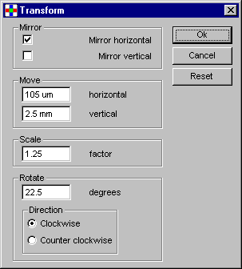

With the Groups menu, layers can be placed in groups. On these groups,
certain operations can be performed.
Click in the picture below on one of the menu-commands for further info.
This menu-item brings up the dialog below. Use this dialog to create groups.
First select a layer on the left, than click add to add this layer to a group.
Only layers with --> before the name (layers containing elements) can
be added to group A or group B. Only one group can be added to group D.
To add only selected elements to the group, click the checkbox Only
Selected.
Set group_a to the selected elements. This will overrule previous settings.
Set group_b to the selected elements. This will overrule previous settings.
Set destination to the given layer number. Overrules the groupdialog destination also.
This operation deletes all elements from all elements/layers in group A. When
selected only in group A is checked, only selected elements from the layers
in group A are deleted. Note that only elements are deleted, not structures.
This may leave empty structures in memory.
Group A must be defined, group B and D are ignored.
The transformation operation can modify structures in different ways.
Clicking the transform item in the menu will display the dialog below.
Specify the values for the transformation you want to perform. Values for
moving can be specified in pm, nm, um,
mm, cm, dm, m (default), inch
and foot. Values for moving, scaling and rotating can be positive
or negative. Integers are not required. Clicking Ok will execute the
transformation.
When Reset is clicked, all values are reset at their defaults. Mirroring in
both directions will be off, the move values will both be 0 (units), scaling
will be 1, rotating 0 and the direction will be "Clockwise".
When leaving the program, the values last used are saved to a settings
file. They will be loaded next time the program is started.
To transform all structures in a file, use the transform operation
from the Operations menu.

Undo last transformation can be used to restore the old situation. Undo can
be used only once, and must be used before any other menu-item is
selected. When an other item is selected, undo is disabled. This is done
because in meantime structures can be selected, deselected, deleted or even
a new file can be loaded.
This item is used for undoing the transformation performed in the same menu.
To undo a transformation on all elements, use the undo operation from the
Operations menu.
Creates a ring around the boundaries of the polygons on the elements/layers defined
in group A. The result is placed on the layer in the destination group.
Group B is ignored.
The factors used for this operation are: correctionfactor and correctionaber.
Correctionfactor is the radius of the ring,
correctionaber is the accuracy of the
segments of the ring.
All segements that have a surface are converted to polygons. Text does not
have a surface and is not converted.
This operation creates a ring around the boundaries of the polygons on the
elements/layers defined in group A and merges it with the original polygons. The
result is placed in group D. Group B is ignored.
With a positive/negative correction factor
you can enlarge/shrink the drawing with that vaule.
All segements that have a surface are converted to polygons. Text does not
have a surface and is not converted.
Duplicates elements/layers from group A to destination. Group B is ignored.
Changes the layer-numbers of the elements/layers in group A to the
layer-number in destination.
This operation detects arcs in polygons on elements/layers in group A and replaces
those segments. The result is put in destination. Group B is ignored.
You can specify the values for this operation in the
factors dialog.
Toarcrmax and
toarcrmin specify the radius for the arcs
and circles. Arcaccur specifies the maximum
abberation between the arc and the polygon segments.
To convert arcs or circles to lines, see to lines.
To lines replaces arcs and circles in polygons on elements/layers in group A
with line-pieces and puts the result in destination. Group B is ignored.
The maximum abberation allowed between the polygon segments and the
arc/circle, can be specified with polyaccur.
This operation removes glitches and short lines from the polygons in group
A. The result is put in destination. Group B is ignored.
Smoothaccur can be used for specifying
the maximum abberation of the smoothed polygon-segements to the originals.
Maxlinemerge is used for the maximum
line-length to merge lines to.
Merges all polygons on the elements/layers in group A and/or group B. This is in fact
the logical operation (A or B). The result is placed
in Destination. Group A or group B, and Destination must be defined. All element
that have a surface are converted to polygons (Text does not have a surface
and is not converted).
Snapfactor determines the accuracy
with which the calculations are performed.
Polyaccur determines the accuracy for conversion of arcs and
circles.
Intersect calculates the intersections (overlappings) between the elements/layers
in group A and group B. This is the logical function (A and B). The result
is placed in destination. All groups must be defined. All elements that have
a surface are converted to polygons (Text does not have a surface and is not
converted).
Snapfactor determines the accuracy
with which the calculations are performed.
Polyaccur determines the accuracy for conversion of arcs and
circles.
See merge on A.
Subtracts the contents of group B from those of group A. All groups must
be set. The result is placed in destination.
All elements that have a surface are converted to polygons (Text does not
have a surface and is not converted).
Snapfactor determines the accuracy
with which the calculations are performed. Polyaccur determines
the accuracy for conversion of arcs and circles.
Subtracts the contents of group A from those of group B. All groups must
be set. The result is placed in destination.
All elements that have a surface are converted to polygons (Text does not
have a surface and is not converted).
Snapfactor determines the accuracy
with which the calculations are performed.
Polyaccur determines the accuracy for conversion of arcs and
circles.
Performs an exclusive-or operation between the contents of group A and group
B. This results in the differences between group A and group B (i.e.
overlappings are not copied). The result is placed in destination. All
groups must be defined.
Snapfactor determines the accuracy
with which the calculations are performed.
Polyaccur determines the accuracy for conversion of arcs and
circles.